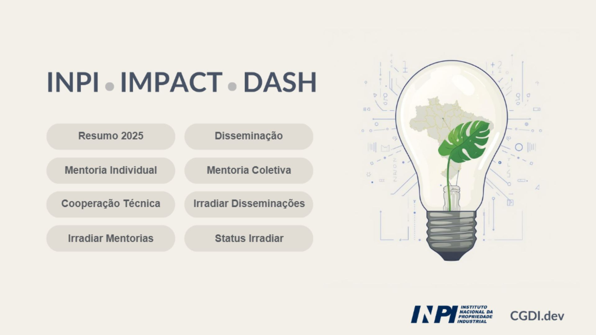
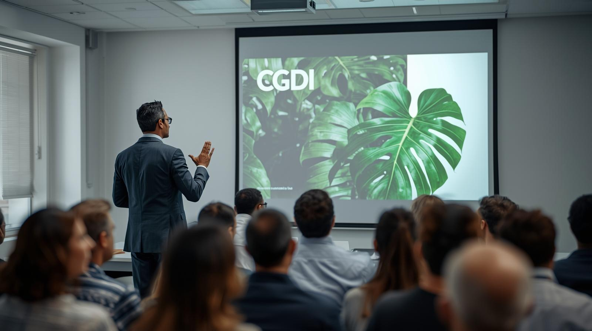

- Protótipos CGDI
- INPI para empreender e inovar
INPI para empreender e inovar
Conheça os conteúdos e programas do INPI
Ações e resultados do INPI

Consulte dados das ações de divulgação da propriedade intelectual, mentorias e cooperação técnica.
Guias, vídeos e cartilhas

Encontre guias, vídeos, cartilhas, a Jornada para Startups e o ranking de software.
Calendário de eventos

Consulte datas e informações para participar dos eventos do INPI.
Programa de mentorias
Conheça o programa e as etapas de orientação a projetos de inovação.
Palestras do INPI

Encontre orientações para solicitar uma palestra do INPI à sua instituição.
Cooperação técnica
Consulte os acordos e os resultados das parcerias do INPI com instituições.
Atendimento presencial

Consulte as unidades e as orientações para agendar atendimento presencial.
Federações e secretarias

Consulte os programas do INPI desenvolvidos com federações das indústrias e secretarias estaduais.
INPI nos estados
Escolha um estado ou o Distrito Federal para consultar notícias sobre ações do INPI nessa região.